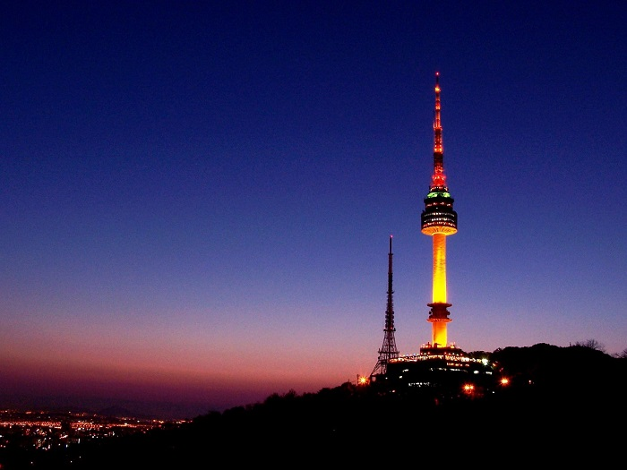
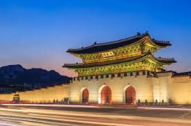
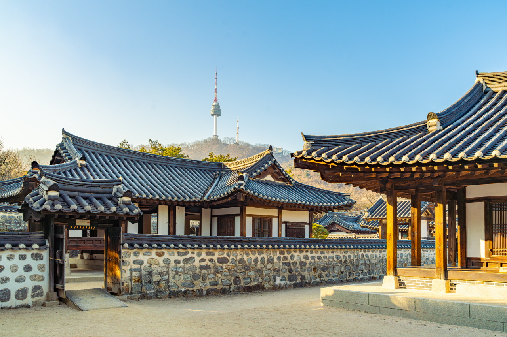
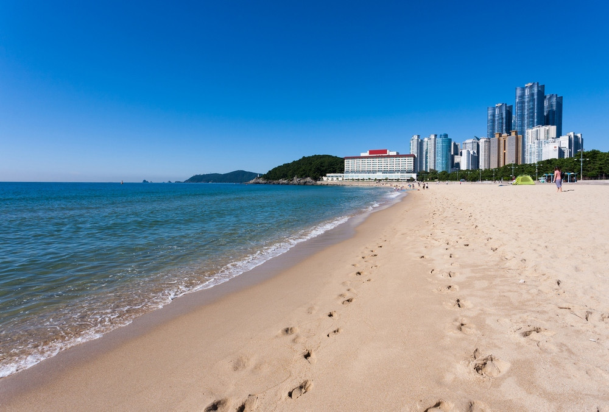

首爾塔位於首爾南山頂，是首爾市區最具代表性的地標之一，高236公尺，提供360度的城市全景。自1980年啟用以來，它成為觀光、約會和文化活動的熱門地點。塔內設有觀景台、餐廳和咖啡廳，尤其夜晚的燈光秀非常浪漫，吸引眾多情侶前來掛鎖祈福。塔周邊的南山公園綠意盎然，適合散步和登山。首爾塔不僅是都市景觀的象徵，也融合了文化藝術活動，是了解首爾現代魅力的重要景點。

景福宮位於首爾市中心，是朝鮮王朝時期最大、最具代表性的宮殿，建於1395年。宮殿佔地廣闊，結合壯麗建築與精緻庭園，展現韓國傳統宮廷風格。景福宮內的勤政殿和慶會樓等建築，曾是皇室處理政務和舉辦典禮的場所。遊客可欣賞傳統宮廷服飾的表演和衛兵交接儀式，體驗歷史氛圍。景福宮歷經戰亂與修復，現已成為保存韓國文化遺產的重要景點，展示了韓國古代建築與皇家生活的魅力。

南山谷韓屋村位於首爾市中心南山腳下，是重現傳統韓國生活的文化村。村內保留了多座朝鮮時期的韓屋建築，並搭配傳統庭院、古井和韓國庭園設計，讓遊客體驗古時民俗生活。村內定期舉辦傳統表演、工藝體驗和節慶活動，如韓服試穿、扇子彩繪和傳統舞蹈。南山谷韓屋村不僅是文化教育的場所，也是拍攝韓國歷史劇和旅遊打卡的熱門景點，讓人深入感受韓國古代生活與建築美學。

海雲台位於釜山市東部，是韓國最著名的海灘之一，以長約1.5公里的細沙海灘聞名。夏季海水清澈、沙灘寬闊，吸引大量遊客前來游泳、曬太陽和水上活動。海灘周邊設有高級飯店、餐廳和咖啡廳，是休閒度假的理想地點。冬季時，海雲台附近的松林和海景仍然迷人，適合散步和攝影。每年夏季，這裡還舉辦海雲台沙雕節和各類音樂活動，成為釜山文化與娛樂的重要象徵。